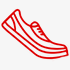

НАШИ ПРЕИМУЩЕСТВА
Делимся опытом
Наши сотрудники всегда готовы поделиться своим опытом, отовятся к соревнованиям по триатлону!
Заботимся о здоровье
Мы работаем для того, здоровью и были в радость Вам и Вашим близким!

Учим бегать
Помогаем с обучением правильной технике бега! Дружим с крупнейшей школой бега в России - I LOVE RUNNING.